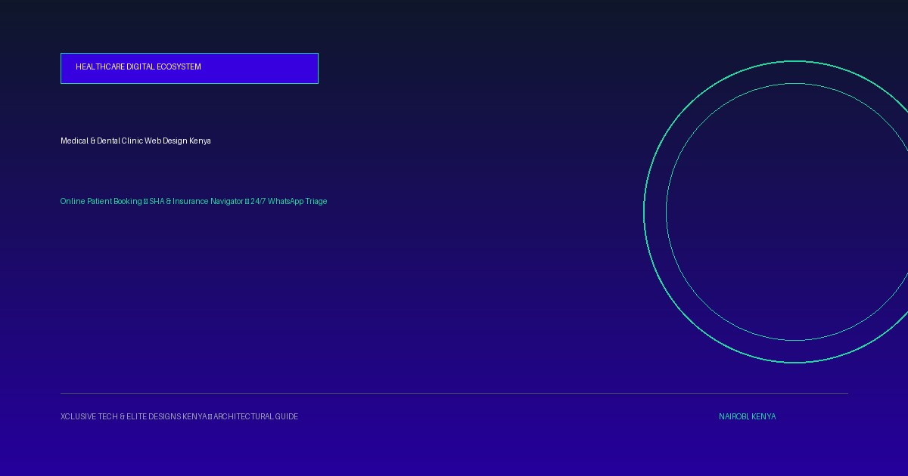

Web Design for Dental Clinics & Medical Practices in Kenya: Online Booking, SHA/Insurance & Patient Portals
Patient behavior in Kenya has fundamentally transformed. With the transition to the Social Health Authority (SHA), increasing insurance pre-authorization scrutiny, and patients demanding instant appointment scheduling from their smartphones, private clinics cannot rely on static brochure websites. Here is how modern dental and medical practices engineer high-converting digital patient ecosystems.

To stop patient drop-off and eliminate reception desk queues, a modern medical or dental practice website must combine instant online slot reservations, transparent SHA and private insurance guidance, paperless pre-consultation intake, and 24/7 WhatsApp automated triage.
| Feature / Workflow | Legacy Clinic Website | Modern Clinical Platform (Xclusive Tech) |
|---|---|---|
| Appointment Scheduling | Telephone call only (frequent busy tones) | Live real-time calendar with instant SMS/WhatsApp confirmation |
| Insurance & SHA Clarity | Vague 'We accept insurance' badge | Interactive insurer breakdown (Jubilee, APA, Britam, SHA) with co-pay estimates |
| Waiting Room Intake | Physical paper clipboard & pen upon arrival | Secure paperless digital pre-intake completed on phone before visit |
| After-Hours Inquiries | Voicemail / unanswered calls after 5 PM | 24/7 Conversational AI WhatsApp bot capturing symptoms & bookings |
| No-Show Management | Manual nurse reminder calls (25-35% no-shows) | Automated 24h & 2h WhatsApp reminders with 1-click slot re-fillers |
1. The Three Operational Crises Facing Kenyan Private Clinics
Across Nairobi hubs like Kilimani, Westlands, Upper Hill, and Parklands—as well as regional cities like Mombasa, Kisumu, and Eldoret—private clinics face unprecedented administrative friction:
- Reception Phone Congestion: Front desks spend up to 70% of their day answering repetitive questions: "How much is teeth whitening?", "Do you accept Jubilee Corporate Gold?", or "Is Dr. Kamau in this afternoon?".
- The SHA (Social Health Authority) Confusion: Patients walk in uncertain whether their procedure is covered, leading to heated reception desk billing arguments.
- Crippling No-Show Rates: Unconfirmed bookings result in empty dental and surgical chairs, costing practices between KES 15,000 and KES 50,000 in lost revenue daily.
2. Core Architectural Pillars of a Modern Clinic Portal
Our work on healthcare ecosystems—including the GLUK School of Dentistry Portal, Oncolink Cancer Information Network, and the PataMaps Accessible Directory—demonstrates that high-converting medical websites require four distinct engineering components:
- Sub-1-Second Mobile Speed: Patients searching for emergency dental care or pediatric consultations are on mobile data. Our lightweight HTML5/CSS architecture loads instantly on Safaricom 4G/5G networks.
- KMPDC-Compliant Specialist Credentialing: Doctors must display their qualifications, areas of sub-specialization, and Kenya Medical Practitioners and Dentists Council (KMPDC) licensing cleanly to build immediate institutional trust.
- Interactive Insurance & Co-Pay Navigator: A searchable module where patients select their insurer (Jubilee, APA, Britam, UAP, AAR, Cigna, SHA) to view covered services, pre-authorization requirements, and expected co-pay ranges.
- Automated Pre-Arrival Intake: Patients securely upload insurance card photos and record allergies, medications, and medical history before stepping foot into the clinic.
3. 24/7 AI WhatsApp Triage & Smart No-Show Prevention
Because over 60% of patient inquiries occur outside standard clinic hours (evenings and weekends), an intelligent conversational WhatsApp bot bridges the gap. The AI bot answers inquiries in English and Swahili, presents treatment menus with indicative pricing (e.g. root canals from KES 18,000; Invisalign from KES 120,000), collects patient details, and books available slots directly into the doctor's calendar.
When an existing patient cancels an appointment, our Smart Waitlist Auto-Refiller instantly pings standby patients on WhatsApp, ensuring your clinic chairs never sit idle.
Frequently Asked Questions
How does an online booking system handle insurance pre-authorizations?
The booking portal allows patients to input their insurance policy number and upload photos of their insurance card during pre-intake. This data is routed directly to the clinic's billing desk 24 hours prior to the appointment, allowing staff to secure pre-authorization before the patient arrives.
Is the digital patient intake compliant with Kenya's Data Protection Act 2019?
Yes. All digital medical history forms and patient identifiers are encrypted in transit via SSL/TLS and stored in compliance with the Data Protection Act (2019) and KMPDC clinical privacy guidelines, with mandatory patient consent gates.
Can patients pay consultation commitment fees via M-Pesa?
Yes. Our systems integrate Safaricom Daraja 2.0 M-Pesa STK Push. Clinics can optionally require a modest booking deposit (e.g., KES 1,000) that is deducted from the final consultation invoice, which reduces no-show rates by over 80%.
How long does it take Xclusive Tech to build a clinic or dental website?
A standard clinic portal with verified doctor profiles and online booking takes 7–10 business days. Multi-branch hospital platforms with full EMR/ERP synchronization take 2–3 weeks.
Ready to Modernize Your Digital Footprint?
From custom intake portals to 24/7 AI WhatsApp booking systems, we engineer platforms that convert visitors into paying clients with sub-1-second mobile performance on Safaricom 4G/5G.

Lead software engineer and award-winning digital architect. Co-founder of Digitally Fit Web Design Firm of the Year, delivering 120+ live platforms across medical, commercial, legal, and industrial sectors in Kenya.